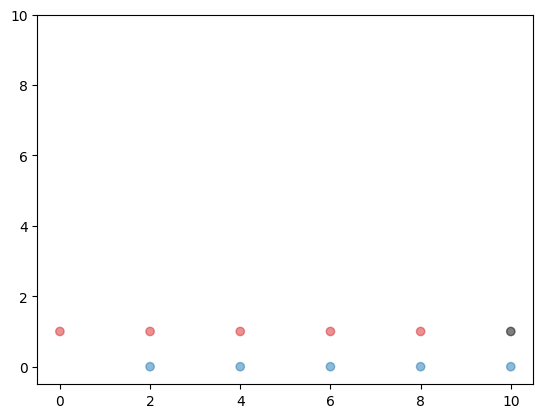
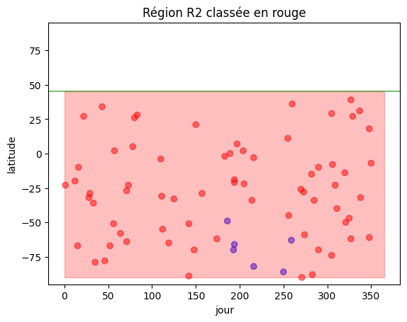
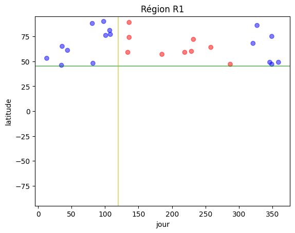

points_bleus = []
points_rouges = []Initiation au machine learning
Initiation au machine learning
Supports pour le cours d’initiation au machine learning proposé sur une semaine de formation.
1 Algorithme des plus proches voisins
knn : k nearest neighbors
1.1 Génération de données d’exemple
Dans un premier exemple les points au dessus de la diagonale sont bleus et ceux en dessous sont rouges.
Générer les coordonnées des différents points \((x,y)\), comprises entre 0 et 100.
random — Generate pseudo-random numbers
random.randint(a, b)
Return a random integer N such that a <= N <= b. Alias for randrange(a, b+1).import random
random.randint(0,100), random.randint(0,100), random.randint(0,100)(31, 48, 59)random.seed(42)
random.randint(0,100), random.randint(0,100), random.randint(0,100)(81, 14, 3)random.randint(0,100), random.randint(0,100), random.randint(0,100)(94, 35, 31)random.randint(0,100)28Génération de 10 points de chaque couleur:
random.seed(42)
n = 10 # Nombre de points par couleur
while len(points_bleus)!=n or len(points_rouges)!=n:
x = random.randint(0,100)
y = random.randint(0,100)
if y >= x and len(points_bleus) < n:
points_bleus.append((x,y))
elif y < x and len(points_rouges) < n:
points_rouges.append((x,y))points_bleus[(3, 94),
(86, 94),
(11, 27),
(29, 64),
(57, 75),
(19, 27),
(5, 93),
(58, 68),
(15, 48),
(10, 70)]points_rouges[(81, 14),
(35, 31),
(28, 17),
(94, 13),
(69, 11),
(75, 54),
(4, 3),
(77, 3),
(71, 25),
(91, 83)]1.2 Visualisation
import matplotlib.pyplot as plt
import numpy as np
# points_bleus puis points_rouges
abscisses = []
ordonnées = []
couleurs = []
for x,y in points_bleus:
abscisses.append(x)
ordonnées.append(y)
couleurs.append('tab:blue')
for x,y in points_rouges:
abscisses.append(x)
ordonnées.append(y)
couleurs.append('tab:red')
plt.scatter(abscisses, ordonnées, c=couleurs, alpha=0.5)
plt.show()1.2.1 Classification d’un nouveau point pris au hasard
exemple avec k = 3
# nouveau_point = (random.randint(0,100), random.randint(0,100))
nouveau_point = (11, 48)# Visualisation du jeu de données et des points que l'on cherche à classer (ici représentés en vert)
abscisses.append(11)
ordonnées.append(48)
abscisses.append(25)
ordonnées.append(26)
couleurs.append('black')
couleurs.append('black')
plt.scatter(abscisses, ordonnées, c=couleurs, alpha=0.5)
plt.show()1.2.2 Jeu de données initial et étiquettes associées
points = points_bleus + points_rouges
couleurs = ['bleu']*10 + ['rouge']*10couleurs['bleu',
'bleu',
'bleu',
'bleu',
'bleu',
'bleu',
'bleu',
'bleu',
'bleu',
'bleu',
'rouge',
'rouge',
'rouge',
'rouge',
'rouge',
'rouge',
'rouge',
'rouge',
'rouge',
'rouge']1.2.3 Etapes de l’algorithme
Distance entre deux points A et B du plan:
\[ L_2(A,B) = \sqrt{(x_A-x_B)^2+(y_A-y_B)^2}\]
math.dist(p, q)
Return the Euclidean distance between two points p and q, each given as a sequence (or iterable) of coordinates. The two points must have the same dimension.import math
origine = (0,0)
unité = (1,1)
math.dist(origine, unité)1.4142135623730951Calcul de l’ensemble des distances du nouveau point aux points du jeu de données initiales
distances = [math.dist(point, nouveau_point) for point in points]# La ligne précédente est équivalente à :
distances = []
for point in points:
distances.append(math.dist(point, nouveau_point))distances[46.69047011971501,
87.98295289429652,
21.0,
24.08318915758459,
53.33854141237835,
22.47220505424423,
45.39823785126467,
51.07837115648854,
4.0,
22.02271554554524,
77.82030583337487,
29.410882339705484,
35.35533905932738,
90.07774419910837,
68.79680225126747,
64.28063471995279,
45.5411901469428,
79.88116173416608,
64.25729530566937,
87.32124598286491]# Liste des distances associées aux couleurs de points
[(d, c) for (d,c) in zip(distances, couleurs)][(46.69047011971501, 'bleu'),
(87.98295289429652, 'bleu'),
(21.0, 'bleu'),
(24.08318915758459, 'bleu'),
(53.33854141237835, 'bleu'),
(22.47220505424423, 'bleu'),
(45.39823785126467, 'bleu'),
(51.07837115648854, 'bleu'),
(4.0, 'bleu'),
(22.02271554554524, 'bleu'),
(77.82030583337487, 'rouge'),
(29.410882339705484, 'rouge'),
(35.35533905932738, 'rouge'),
(90.07774419910837, 'rouge'),
(68.79680225126747, 'rouge'),
(64.28063471995279, 'rouge'),
(45.5411901469428, 'rouge'),
(79.88116173416608, 'rouge'),
(64.25729530566937, 'rouge'),
(87.32124598286491, 'rouge')]distances_classées = sorted([(d, c) for (d,c) in zip(distances, couleurs)])
distances_classées[(4.0, 'bleu'),
(21.0, 'bleu'),
(22.02271554554524, 'bleu'),
(22.47220505424423, 'bleu'),
(24.08318915758459, 'bleu'),
(29.410882339705484, 'rouge'),
(35.35533905932738, 'rouge'),
(45.39823785126467, 'bleu'),
(45.5411901469428, 'rouge'),
(46.69047011971501, 'bleu'),
(51.07837115648854, 'bleu'),
(53.33854141237835, 'bleu'),
(64.25729530566937, 'rouge'),
(64.28063471995279, 'rouge'),
(68.79680225126747, 'rouge'),
(77.82030583337487, 'rouge'),
(79.88116173416608, 'rouge'),
(87.32124598286491, 'rouge'),
(87.98295289429652, 'bleu'),
(90.07774419910837, 'rouge')]k=3
distances_classées[:k][(4.0, 'bleu'), (21.0, 'bleu'), (22.02271554554524, 'bleu')]Cas d’une classification erronée (dûe au manque de points dans le jeu de données initial)
nouveau_point = (25, 26) # devrait être classé en bleu
distances = [math.dist(point, nouveau_point) for point in points]
plus_petites_distances = sorted([(d, c) for (d,c) in zip(distances, couleurs)])[:k]
plus_petites_distances[(6.082762530298219, 'bleu'),
(9.486832980505138, 'rouge'),
(11.180339887498949, 'rouge')]Extraction de la couleur la plus fréquente:
from collections import Counter
Counter([couleur for _, couleur in plus_petites_distances]).most_common(1)[0][0]'rouge'1.3 Fonction kNN
from collections import Counter
def kNN(X, y, new_x, k=3):
"""
args:
X: jeu de données initiales
y: classes associées aux éléments de X
new_x: nouveau point que l'on souhaite classer
k: nombre de voisins pris dans l'évaluation
return:
La classe de `y` la plus fréquente
"""
distances = [math.dist(new_x, x) for x in X]
plus_petites_distances = sorted([(d, c) for (d,c) in zip(distances, y)])[:k]
counter = Counter([classe for _, classe in plus_petites_distances])
return counter.most_common(1)[0][0]kNN(points, couleurs, (25, 26)) # devrait être classé en bleu'rouge'kNN(points, couleurs, (11, 48)) # devrait être classé en bleu'bleu'1.4 Références
2 Normalisation
2.1 Normalisation: motivation
Création d’un jeu de données d’exemple
from collections import namedtuple
Point = namedtuple('Point', 'x1 x2')p = Point(1, 2)
pPoint(x1=1, x2=2)p.x11p[0]1# abscisses
list(range(0,12,2))[0, 2, 4, 6, 8, 10]points_bleus = [Point(x1, 0) for x1 in range(2,12,2)]
points_rouges = [Point(x1, 1) for x1 in range(0,10,2)]
points = points_bleus + points_rouges
couleurs = ['bleu']*len(points_bleus) + ['rouge']*len(points_rouges)points[Point(x1=2, x2=0),
Point(x1=4, x2=0),
Point(x1=6, x2=0),
Point(x1=8, x2=0),
Point(x1=10, x2=0),
Point(x1=0, x2=1),
Point(x1=2, x2=1),
Point(x1=4, x2=1),
Point(x1=6, x2=1),
Point(x1=8, x2=1)]import matplotlib.pyplot as plt
abscisses = [point.x1 for point in points]
ordonnées = [point.x2 for point in points]
point_inconnu = Point(10, 1)
colors = []
for c in couleurs:
if c == 'bleu':
colors.append('tab:blue')
else:
colors.append('tab:red')
# point_inconnu
abscisses.append(point_inconnu.x1)
ordonnées.append(point_inconnu.x2)
colors.append('black')
plt.ylim(-0.5, 10)
plt.scatter(abscisses, ordonnées, c=colors, alpha=0.5)
plt.show()
(10, 1) serait rouge mais classé bleu pour k=1
kNN(points, couleurs, point_inconnu, k=1)'bleu'kNN(points, couleurs, point_inconnu, k=3)'bleu'2.2 Moyenne, variance et écart type
Pour l’ensemble de n valeurs x = [x_1, ..., x_n ], on définit: - la moyenne (mean): \[\overline{x} = \mu = \frac{1}{n} \sum_{i=1}^{n}x_{i}\] - La variance qui est une mesure de la dispersion de l’échantillon, c’est la moyenne des carrés des distances à la moyenne de l’échantillon. \[Var(x)=\sigma^2=\frac{1}{n} \sum_{i=1}^{n}(x_{i}-\mu)^2\] - l’écart type (standard deviation) \[\sigma=\sqrt{Var(x)}=\sqrt{\frac{1}{n} \sum_{i=1}^{n}(x_{i}-\overline{x})^2}\]
2.3 Normalisation standard
Pour l’ensemble de n valeurs \(x = [x_1, ..., x_n ]\), on définit: \[z_{i} = \frac{x_{i}-\mu}{\sigma}\]
On utilise zà la place de x
On fait le même procédé sur chacun des axes
points[Point(x1=2, x2=0),
Point(x1=4, x2=0),
Point(x1=6, x2=0),
Point(x1=8, x2=0),
Point(x1=10, x2=0),
Point(x1=0, x2=1),
Point(x1=2, x2=1),
Point(x1=4, x2=1),
Point(x1=6, x2=1),
Point(x1=8, x2=1)]couleurs['bleu',
'bleu',
'bleu',
'bleu',
'bleu',
'rouge',
'rouge',
'rouge',
'rouge',
'rouge']x1 = [point.x1 for point in points]
x1[2, 4, 6, 8, 10, 0, 2, 4, 6, 8]statistics — Mathematical statistics functions
from statistics import mean, stdev, pstdev
# Moyenne
mean(x1)5# Ecart type
pstdev(x1)3.0Remarque: stdev sert à évaluer l’écart type d’une population à partir d’un échantillon, ne donne pas le même résultat que la formule proposée qui, comme pstdevdonne directement l’écart type d’une population.
stdev(x1)3.1622776601683795math.sqrt((1/len(x1))*sum([(x1_i - mean(x1))**2 for x1_i in x1]))3.0z1 = [(x1_i - mean(x1))/pstdev(x1) for x1_i in x1]
z1[-1.0,
-0.3333333333333333,
0.3333333333333333,
1.0,
1.6666666666666667,
-1.6666666666666667,
-1.0,
-0.3333333333333333,
0.3333333333333333,
1.0]mean(z1)0.0pstdev(z1)1.0x2 = [point.x2 for point in points]
z2 = [(x2_i - mean(x2))/pstdev(x2) for x2_i in x2]
z2[-1.0, -1.0, -1.0, -1.0, -1.0, 1.0, 1.0, 1.0, 1.0, 1.0]mean(z2), pstdev(z2)(0.0, 1.0)point_inconnuPoint(x1=10, x2=1)Les valeurs de moyennes et d’écarts types sont reprises pour la modification des coordonnées du point inconnu.
z1_inconnu = (point_inconnu.x1 - mean(x1))/pstdev(x1)
z2_inconnu = (point_inconnu.x2 - mean(x2))/pstdev(x2)
# Pour l'affichage
z1.append(z1_inconnu)
z2.append(z2_inconnu)colors = []
for c in couleurs:
if c == 'bleu':
colors.append('tab:blue')
else:
colors.append('tab:red')
colors.append('black')
plt.ylim(-1.6, 1.6)
plt.scatter(z1, z2, c=colors, alpha=0.5)
plt.show()2.4 kNN sur données normalisées
z1.pop()
z2.pop()
list(zip(z1, z2))[(-1.0, -1.0),
(-0.3333333333333333, -1.0),
(0.3333333333333333, -1.0),
(1.0, -1.0),
(1.6666666666666667, -1.0),
(-1.6666666666666667, 1.0),
(-1.0, 1.0),
(-0.3333333333333333, 1.0),
(0.3333333333333333, 1.0),
(1.0, 1.0)]X_normalisé = list(zip(z1, z2))point_inconnu_normalisé = Point(z1_inconnu, z2_inconnu)
point_inconnu_normaliséPoint(x1=1.6666666666666667, x2=1.0)kNN(X_normalisé, couleurs, point_inconnu_normalisé, k=1)'rouge'kNN(X_normalisé, couleurs, point_inconnu_normalisé, k=3)'rouge'kNN(X_normalisé, couleurs, point_inconnu_normalisé, k=2)'rouge'3 Parallèle avec scikit learn
Nous allons coder deux classes au fonctionnement similaire à celles de scikit learn: StandardScaler pour la normalisation et NearestNeighbors pour le knn.
Ne pas utiliser
sklearnpour l’instant.
3.1 Nomenclature
import pandas as pd
from collections import namedtuple
Point = namedtuple('Point', 'x_1 x_2')
points_bleus = [Point(x_1, 0) for x_1 in range(2,12,2)]
points_rouges = [Point(x_1, 1) for x_1 in range(0,10,2)]
points = points_bleus + points_rouges
couleurs = ['bleu']*len(points_bleus) + ['rouge']*len(points_rouges)
data = pd.DataFrame({'abscisse' : [point.x_1 for point in points],
'ordonnée' : [point.x_2 for point in points],
'couleur' : couleurs})
data
# observation // individu
# X : caractéristiques (features), ici [abscisse, ordonnée], [x_1, x_2]
# y : classe, cible ici couleur| abscisse | ordonnée | couleur | |
|---|---|---|---|
| 0 | 2 | 0 | bleu |
| 1 | 4 | 0 | bleu |
| 2 | 6 | 0 | bleu |
| 3 | 8 | 0 | bleu |
| 4 | 10 | 0 | bleu |
| 5 | 0 | 1 | rouge |
| 6 | 2 | 1 | rouge |
| 7 | 4 | 1 | rouge |
| 8 | 6 | 1 | rouge |
| 9 | 8 | 1 | rouge |
Scikit-learn travaille avec des valeurs numériques (Notre algorithme quant à lui autorise des valeurs textuelles pour y)
[c=='bleu' for c in couleurs][True, True, True, True, True, False, False, False, False, False]data = pd.DataFrame({'x_1' : [point.x_1 for point in points],
'x_2' : [point.x_2 for point in points],
'y' : [int(c=='bleu') for c in couleurs]})
data| x_1 | x_2 | y | |
|---|---|---|---|
| 0 | 2 | 0 | 1 |
| 1 | 4 | 0 | 1 |
| 2 | 6 | 0 | 1 |
| 3 | 8 | 0 | 1 |
| 4 | 10 | 0 | 1 |
| 5 | 0 | 1 | 0 |
| 6 | 2 | 1 | 0 |
| 7 | 4 | 1 | 0 |
| 8 | 6 | 1 | 0 |
| 9 | 8 | 1 | 0 |
# X
X = pd.DataFrame({'x_1' : [point.x_1 for point in points],
'x_2' : [point.x_2 for point in points]})
print(X.to_string(index=False)) x_1 x_2
2 0
4 0
6 0
8 0
10 0
0 1
2 1
4 1
6 1
8 1\[ X= \begin{bmatrix} 2 & 0\\ 4 & 0\\ 6 & 0\\ \vdots & \vdots \\ 8 & 1\\ \end{bmatrix} \]
# y
y = pd.DataFrame({'y' : [int(c=='bleu') for c in couleurs]})
print(y.to_string(index=False)) y
1
1
1
1
1
0
0
0
0
0\[ y= \begin{bmatrix} 1\\ 1\\ 1\\ \vdots \\ 0\\ \end{bmatrix} \]
3.2 Standardisation
Ne pas utiliser sklearn pour l’instant. Par contre, on va s’inspirer de la signature des fonctions de sklearn.preprocessing.StandardScaler
class Scaler():
def __init__(self):
pass
def fit(self, X):
"""Compute the mean and std to be used for later scaling."""
pass
def transform(self, X):
"""Perform standardization by centering and scaling."""
passpoints[Point(x_1=2, x_2=0),
Point(x_1=4, x_2=0),
Point(x_1=6, x_2=0),
Point(x_1=8, x_2=0),
Point(x_1=10, x_2=0),
Point(x_1=0, x_2=1),
Point(x_1=2, x_2=1),
Point(x_1=4, x_2=1),
Point(x_1=6, x_2=1),
Point(x_1=8, x_2=1)]import numpy as np
X = np.array(points, dtype=float)
Xarray([[ 2., 0.],
[ 4., 0.],
[ 6., 0.],
[ 8., 0.],
[10., 0.],
[ 0., 1.],
[ 2., 1.],
[ 4., 1.],
[ 6., 1.],
[ 8., 1.]])X.shape(10, 2)for j in range(X.shape[1]):
print(f'Vecteur colonne {j}')
print(np.atleast_2d(X[:, j]).T)
print('\n')Vecteur colonne 0
[[ 2.]
[ 4.]
[ 6.]
[ 8.]
[10.]
[ 0.]
[ 2.]
[ 4.]
[ 6.]
[ 8.]]
Vecteur colonne 1
[[0.]
[0.]
[0.]
[0.]
[0.]
[1.]
[1.]
[1.]
[1.]
[1.]]
from statistics import mean, stdev
_mean = []
_stdev = []
for j in range(X.shape[1]):
_mean.append(mean(X[:, j]))
_stdev.append(stdev(X[:, j]))
_mean[5.0, 0.5]_stdev[3.1622776601683795, 0.5270462766947299]Remarque: stdev plutôt que pstdev, car on peu considérer que l’on évalue l’écart type d’une population bien plus grande. En fait, ici les deux sont équivalents.
X_normalisé = np.zeros_like(X)
X_normaliséarray([[0., 0.],
[0., 0.],
[0., 0.],
[0., 0.],
[0., 0.],
[0., 0.],
[0., 0.],
[0., 0.],
[0., 0.],
[0., 0.]])for j in range(X.shape[1]):
X_normalisé[:, j] = (X[:, j] - _mean[j])/_stdev[j]X_normaliséarray([[-0.9486833 , -0.9486833 ],
[-0.31622777, -0.9486833 ],
[ 0.31622777, -0.9486833 ],
[ 0.9486833 , -0.9486833 ],
[ 1.58113883, -0.9486833 ],
[-1.58113883, 0.9486833 ],
[-0.9486833 , 0.9486833 ],
[-0.31622777, 0.9486833 ],
[ 0.31622777, 0.9486833 ],
[ 0.9486833 , 0.9486833 ]])class Scaler():
def __init__(self):
self._mean = []
self._stdev = []
def fit(self, X):
"""Compute the mean and std to be used for later scaling."""
X = np.array(X, dtype=float)
self._mean.clear()
self._stdev.clear()
for axe in range(X.shape[1]):
self._mean.append(mean(X[:, axe]))
self._stdev.append(stdev(X[:, axe]))
def transform(self, X):
"""Perform standardization by centering and scaling."""
X = np.array(X, dtype=float)
X_normalisé = np.zeros_like(X)
for j in range(X.shape[1]):
X_normalisé[:, j] = (X[:, j] - self._mean[j])/self._stdev[j]
return X_normaliséscaler = Scaler()
scaler.fit(points)
points_normalisés = scaler.transform(points)
points_normalisésarray([[-0.9486833 , -0.9486833 ],
[-0.31622777, -0.9486833 ],
[ 0.31622777, -0.9486833 ],
[ 0.9486833 , -0.9486833 ],
[ 1.58113883, -0.9486833 ],
[-1.58113883, 0.9486833 ],
[-0.9486833 , 0.9486833 ],
[-0.31622777, 0.9486833 ],
[ 0.31622777, 0.9486833 ],
[ 0.9486833 , 0.9486833 ]])point_inconnu = Point(10, 1)
scaler.transform([point_inconnu])array([[1.58113883, 0.9486833 ]])# exemple avec X qui a plus de caractéristiques (i.e. colonnes):X = np.random.rand(4,5)*100
Xarray([[83.09934843, 70.7708862 , 25.3335158 , 48.63451057, 36.18838536],
[22.55555815, 26.97835092, 60.7139201 , 68.64884267, 0.52602388],
[86.4091598 , 55.41345421, 57.79210772, 88.2442086 , 87.02527141],
[80.57458884, 55.85006234, 57.21028627, 46.14293692, 78.31167989]])scaler = Scaler()
scaler.fit(X)
scaler.transform(X)array([[ 0.48988251, 1.01190747, -1.49365893, -0.72646452, -0.35774617],
[-1.49538991, -1.38115425, 0.62621673, 0.29149991, -1.24839601],
[ 0.59841349, 0.17269407, 0.45115149, 1.28815499, 0.91187991],
[ 0.40709391, 0.19655271, 0.4162907 , -0.85319038, 0.69426227]])mean(scaler.transform(X)[:,1])-6.938893903907228e-173.3 Classification
Ne pas utiliser sklearn pour l’instant. Par contre, on va s’inspirer de la signature des fonctions de sklearn.neighbors.KNeighborsClassifier.
class knnClassifier():
def __init__(self, k=3):
pass
def fit(self, X, y):
"""Fit the nearest neighbors estimator from the training dataset."""
pass
def predict(self, X):
"""Predict the class labels for the provided data."""
passclass knnClassifier():
def __init__(self, k=3):
self.k = k
self._fit_X = None
self._fit_y = None
def fit(self, X, y):
"""Fit the nearest neighbors estimator from the training dataset."""
self._fit_X = np.array(X, dtype=float)
self._fit_y = y
def predict(self, X):
"""Predict the class labels for the provided data."""
def kNN(new_x):
"""
args:
X: jeu de données initiales
y: classes associées aux éléments de X
new_x: nouveau point que l'on souhaite classer
k: nombre de voisins pris dans l'évaluation
return:
La classe de `y` la plus fréquente
"""
distances = [math.dist(new_x, x) for x in self._fit_X]
plus_petites_distances = sorted([(d, c) for (d,c) in \
zip(distances, self._fit_y)])[:self.k]
counter = Counter([classe for _, classe in plus_petites_distances])
return counter.most_common(1)[0][0]
return [kNN(x) for x in X]points_inconnus = [Point(0, 0), Point(10, 1)]# Sans normalisation
classifier = knnClassifier()
classifier.fit(points, couleurs)
classifier.predict(points_inconnus)['rouge', 'bleu']# Avec normalisation
scaler = Scaler()
scaler.fit(points)
points_normalisés = scaler.transform(points)
points_inconnus_normalisés = scaler.transform(points_inconnus)
classifier = knnClassifier()
classifier.fit(points_normalisés, couleurs)
classifier.predict(points_inconnus_normalisés)['bleu', 'rouge']4 Application à un vrai jeu de données
Peut-on prédire si un client va acheter une assurance ou pas?
Les données contiennent 5 822 enregistrements de clients réels. Chaque enregistrement se compose de 86 variables, contenant des données sociodémographiques (variables 1 à 43) et la souscription ou la possession de certains produits (variables 44 à 86). Les données sociodémographiques sont dérivées des codes postaux. Tous les clients vivant dans des zones ayant le même code postal ont les mêmes attributs sociodémographiques. La variable 86 (Achat) indique si le client a souscrit une police d’assurance caravane. De plus amples informations sur les variables individuelles peuvent être obtenues sur http://www.liacs.nl/~putten/library/cc2000/data.html
4.1 Séparation du jeu de données en données d’entraînement et données de test
from ISLP import load_data
caravan = load_data('Caravan')
caravan.columnsIndex(['MOSTYPE', 'MAANTHUI', 'MGEMOMV', 'MGEMLEEF', 'MOSHOOFD', 'MGODRK',
'MGODPR', 'MGODOV', 'MGODGE', 'MRELGE', 'MRELSA', 'MRELOV', 'MFALLEEN',
'MFGEKIND', 'MFWEKIND', 'MOPLHOOG', 'MOPLMIDD', 'MOPLLAAG', 'MBERHOOG',
'MBERZELF', 'MBERBOER', 'MBERMIDD', 'MBERARBG', 'MBERARBO', 'MSKA',
'MSKB1', 'MSKB2', 'MSKC', 'MSKD', 'MHHUUR', 'MHKOOP', 'MAUT1', 'MAUT2',
'MAUT0', 'MZFONDS', 'MZPART', 'MINKM30', 'MINK3045', 'MINK4575',
'MINK7512', 'MINK123M', 'MINKGEM', 'MKOOPKLA', 'PWAPART', 'PWABEDR',
'PWALAND', 'PPERSAUT', 'PBESAUT', 'PMOTSCO', 'PVRAAUT', 'PAANHANG',
'PTRACTOR', 'PWERKT', 'PBROM', 'PLEVEN', 'PPERSONG', 'PGEZONG',
'PWAOREG', 'PBRAND', 'PZEILPL', 'PPLEZIER', 'PFIETS', 'PINBOED',
'PBYSTAND', 'AWAPART', 'AWABEDR', 'AWALAND', 'APERSAUT', 'ABESAUT',
'AMOTSCO', 'AVRAAUT', 'AAANHANG', 'ATRACTOR', 'AWERKT', 'ABROM',
'ALEVEN', 'APERSONG', 'AGEZONG', 'AWAOREG', 'ABRAND', 'AZEILPL',
'APLEZIER', 'AFIETS', 'AINBOED', 'ABYSTAND', 'Purchase'],
dtype='object')caravan.shape(5822, 86)Séparation du jeu de données en données d’entraînement (80%) et données de test (20%) sans sklearn
caravan.head()| MOSTYPE | MAANTHUI | MGEMOMV | MGEMLEEF | MOSHOOFD | MGODRK | MGODPR | MGODOV | MGODGE | MRELGE | ... | APERSONG | AGEZONG | AWAOREG | ABRAND | AZEILPL | APLEZIER | AFIETS | AINBOED | ABYSTAND | Purchase | |
|---|---|---|---|---|---|---|---|---|---|---|---|---|---|---|---|---|---|---|---|---|---|
| 0 | 33 | 1 | 3 | 2 | 8 | 0 | 5 | 1 | 3 | 7 | ... | 0 | 0 | 0 | 1 | 0 | 0 | 0 | 0 | 0 | No |
| 1 | 37 | 1 | 2 | 2 | 8 | 1 | 4 | 1 | 4 | 6 | ... | 0 | 0 | 0 | 1 | 0 | 0 | 0 | 0 | 0 | No |
| 2 | 37 | 1 | 2 | 2 | 8 | 0 | 4 | 2 | 4 | 3 | ... | 0 | 0 | 0 | 1 | 0 | 0 | 0 | 0 | 0 | No |
| 3 | 9 | 1 | 3 | 3 | 3 | 2 | 3 | 2 | 4 | 5 | ... | 0 | 0 | 0 | 1 | 0 | 0 | 0 | 0 | 0 | No |
| 4 | 40 | 1 | 4 | 2 | 10 | 1 | 4 | 1 | 4 | 7 | ... | 0 | 0 | 0 | 1 | 0 | 0 | 0 | 0 | 0 | No |
5 rows × 86 columns
caravan.dtypesMOSTYPE int64
MAANTHUI int64
MGEMOMV int64
MGEMLEEF int64
MOSHOOFD int64
...
APLEZIER int64
AFIETS int64
AINBOED int64
ABYSTAND int64
Purchase object
Length: 86, dtype: objectcaravan.Purchase.map(lambda x: int(x=='Yes'))0 0
1 0
2 0
3 0
4 0
..
5817 0
5818 0
5819 1
5820 0
5821 0
Name: Purchase, Length: 5822, dtype: int64caravan.Purchase = caravan.Purchase.map(lambda x: int(x=='Yes'))caravan.to_numpy()array([[33, 1, 3, ..., 0, 0, 0],
[37, 1, 2, ..., 0, 0, 0],
[37, 1, 2, ..., 0, 0, 0],
...,
[33, 1, 3, ..., 0, 0, 1],
[34, 1, 3, ..., 0, 0, 0],
[33, 1, 3, ..., 0, 0, 0]])X = caravan.to_numpy()[:,:-1]
X.shape(5822, 85)y = caravan.to_numpy()[:,-1]
y.shape(5822,)Xarray([[33, 1, 3, ..., 0, 0, 0],
[37, 1, 2, ..., 0, 0, 0],
[37, 1, 2, ..., 0, 0, 0],
...,
[33, 1, 3, ..., 0, 0, 0],
[34, 1, 3, ..., 0, 0, 0],
[33, 1, 3, ..., 0, 0, 0]])yarray([0, 0, 0, ..., 1, 0, 0])# Sans utilisation de numpy X_, y_
X_ = X.tolist()
type(X_), len(X_), len(X_[0])(list, 5822, 85)y_ = y.tolist()
type(y_), len(y_)(list, 5822)4.1.1 Solution avec random.shuffle(x)
Solution avec random.shuffle(x)
indices = list(range(10))
indices[0, 1, 2, 3, 4, 5, 6, 7, 8, 9]import randomrandom.shuffle(indices)
indices[2, 9, 7, 1, 6, 0, 8, 3, 5, 4]import math
séparateur = math.floor(len(indices)*20/100)
séparateur2indices[:séparateur][2, 9]indices[séparateur:][7, 1, 6, 0, 8, 3, 5, 4]4.1.2 Solution avec random.sample()
Solution avec random.sample()
random.seed(0)list(range(10))[0, 1, 2, 3, 4, 5, 6, 7, 8, 9]random.sample(range(10), k=3)[6, 9, 0]nombre_de_ligne = X.shape[0]
random.seed(3141592)
# 20%
taille_de_l_échantillon = math.floor(nombre_de_ligne*20/100)
échantillon = random.sample(range(nombre_de_ligne),
k=taille_de_l_échantillon)
len(échantillon)1164len(set(échantillon))1164X_test = X[échantillon, :]
X_test.shape(1164, 85)y_test = y[échantillon]
y_test.shape(1164,)# Exemple pour récupérer les indices restants
échantillon_test = random.sample(range(10), k=3)
set(échantillon_test){1, 7, 8}indices = set(range(10))
indices{0, 1, 2, 3, 4, 5, 6, 7, 8, 9}indices.difference_update(échantillon_test)
indices{0, 2, 3, 4, 5, 6, 9}# Pour notre jeu de données
indices_restants = set(range(nombre_de_ligne))
indices_restants.difference_update(échantillon)
indices_restants = list(indices_restants)
len(indices_restants)4658X_train = X[indices_restants, :]
X_train.shape(4658, 85)y_train = y[indices_restants]
y_train.shape(4658,)Vérifier que la distribution des valeurs dans y_train et y_test corresponde à celle de y. Est-on sûr que ce soit le cas à chaque fois?
y_train.sum()/len(y_train)0.05775010734220696y_test.sum()/len(y_test)0.067869415807560134.2 Notre implémentation des algorithmes
Test de nos objets sur ce jeu de données (si la généralisation à un nombre arbitraire de colonnes a été faite)
import numpy as np
from collections import Counter
from statistics import mean, stdevclass Scaler():
def __init__(self):
self._mean = []
self._stdev = []
def fit(self, X):
"""Compute the mean and std to be used for later scaling."""
X = np.array(X, dtype=float)
self._mean.clear()
self._stdev.clear()
for axe in range(X.shape[1]):
self._mean.append(mean(X[:, axe]))
self._stdev.append(stdev(X[:, axe]))
def transform(self, X):
"""Perform standardization by centering and scaling."""
X = np.array(X, dtype=float)
X_normalisé = np.zeros_like(X)
for j in range(X.shape[1]):
X_normalisé[:, j] = (X[:, j] - self._mean[j])/self._stdev[j]
return X_normaliséclass knnClassifier():
def __init__(self, k=3):
self.k = k
self._fit_X = None
self._fit_y = None
def fit(self, X, y):
"""Fit the nearest neighbors estimator from the training dataset."""
self._fit_X = np.array(X, dtype=float)
self._fit_y = y
def predict(self, X):
"""Predict the class labels for the provided data."""
def kNN(new_x):
"""
args:
X: jeu de données initiales
y: classes associées aux éléments de X
new_x: nouveau point que l'on souhaite classer
k: nombre de voisins pris dans l'évaluation
return:
La classe de `y` la plus fréquente
"""
distances = [math.dist(new_x, x) for x in self._fit_X]
plus_petites_distances = sorted([(d, c) for (d,c) in \
zip(distances, self._fit_y)])[:self.k]
counter = Counter([classe for _, classe in plus_petites_distances])
return counter.most_common(1)[0][0]
return [kNN(x) for x in X]4.2.1 Sans normalisation
# sans normalisation
# apprentissage
classifier = knnClassifier()
classifier.fit(X_train, y_train)
# inférence
y_test_predicted = classifier.predict(X_test)Quel est le taux d’erreur?
sum(y_test_predicted != y_test)/len(y_test)0.08591065292096224.2.2 Avec normalisation
# avec normalisation
scaler = Scaler()
scaler.fit(X_train)
X_train_normalized = scaler.transform(X_train)
# apprentissage
classifier = knnClassifier()
classifier.fit(X_train_normalized, y_train)
# inférence
X_test_normalized = scaler.transform(X_test)
y_test_predicted = classifier.predict(X_test_normalized)sum(y_test_predicted != y_test)/len(y_test)0.08247422680412371Différence légère sur le taux d’erreur.
4.2.3 Quelle mesure pour la pertinence de notre algorithme?
caravan.Purchase.value_counts()0 5474
1 348
Name: Purchase, dtype: int64Le taux d’erreur KNN sur les 1 000 observations de test est d’un peu moins de 10%. À première vue, cela peut paraître plutôt bon. Cependant, étant donné qu’un peu plus de 6 % des clients ont souscrit une assurance, nous pourrions réduire le taux d’erreur à près de 6 % en prédisant toujours Non, quelles que soient les valeurs des prédicteurs ! C’est ce qu’on appelle l’hypothèse nulle.}
Supposons qu’il y ait un coût non négligeable à tenter de vendre une assurance à un individu donné. Par exemple, un vendeur doit peut-être rendre visite à chaque client potentiel. Si l’entreprise tente de vendre de l’assurance à une sélection aléatoire de clients, le taux de réussite ne sera que de 6 %, ce qui pourrait être bien trop faible compte tenu des coûts impliqués. Au lieu de cela, l’entreprise aimerait essayer de vendre de l’assurance uniquement aux clients susceptibles de l’acheter. Le taux d’erreur global n’a donc aucun intérêt. Au lieu de cela, la fraction d’individus dont on prévoit correctement qu’ils souscriront une assurance est intéressante.
Comment mesurer ce taux?
from ISLP import confusion_tableconfusion_table(y_test_predicted, y_test)| Truth | 0 | 1 |
|---|---|---|
| Predicted | ||
| 0 | 1063 | 74 |
| 1 | 22 | 5 |
5/(22+5)0.18518518518518517# Clients choisis au hasard
(74+5)/(74+5+1063+22)0.06786941580756013assert len(y_test) == 74+5+1063+224.3 Avec scikit-learn
4.3.1 k=1 sans normalisation
import pandas as pd
from sklearn.preprocessing import StandardScaler
from sklearn.neighbors import KNeighborsClassifier
from sklearn.model_selection import train_test_split# avec un seul voisin: k=1, sans normalisation
(X_train,
X_test,
y_train,
y_test) = train_test_split(X,
y,
test_size=1164,
random_state=0)
knn1 = KNeighborsClassifier(n_neighbors=1)
knn1_pred = knn1.fit(X_train, y_train).predict(X_test)
np.mean(y_test != knn1_pred), np.mean(y_test)
confusion_table(knn1_pred, y_test)| Truth | 0 | 1 |
|---|---|---|
| Predicted | ||
| 0 | 1021 | 69 |
| 1 | 66 | 8 |
8/(66+8)0.108108108108108114.3.2 k=1 avec normalisation
# avec un seul voisin: k=1
scaler_sk = StandardScaler(with_mean=True,
with_std=True,
copy=True)
scaler_sk.fit(X)
X_std = scaler_sk.transform(X)
(X_train,
X_test,
y_train,
y_test) = train_test_split(X_std,
y,
test_size=1164,
random_state=0)
knn1 = KNeighborsClassifier(n_neighbors=1)
X_test_std = scaler_sk.transform(X_test)
knn1_pred = knn1.fit(X_train, y_train).predict(X_test_std)
np.mean(y_test != knn1_pred), np.mean(y_test)
confusion_table(knn1_pred, y_test)| Truth | 0 | 1 |
|---|---|---|
| Predicted | ||
| 0 | 1071 | 73 |
| 1 | 16 | 4 |
4/(16+4)0.24.3.3 k=3 sans normalisation
(X_train,
X_test,
y_train,
y_test) = train_test_split(X,
y,
test_size=1164,
random_state=0)
knn3 = KNeighborsClassifier(n_neighbors=3)
knn3_pred = knn3.fit(X_train, y_train).predict(X_test)
np.mean(y_test != knn3_pred), np.mean(y_test)
confusion_table(knn3_pred, y_test)| Truth | 0 | 1 |
|---|---|---|
| Predicted | ||
| 0 | 1072 | 77 |
| 1 | 15 | 0 |
Bof, bof…
4.3.4 k=3 avec normalisation
scaler_sk = StandardScaler(with_mean=True,
with_std=True,
copy=True)
scaler_sk.fit(X)
X_std = scaler_sk.transform(X)
(X_train,
X_test,
y_train,
y_test) = train_test_split(X_std,
y,
test_size=1164,
random_state=0)
knn3 = KNeighborsClassifier(n_neighbors=3)
X_test_std = scaler_sk.transform(X_test)
knn3_pred = knn3.fit(X_train, y_train).predict(X_test_std)
np.mean(y_test != knn3_pred), np.mean(y_test)
confusion_table(knn3_pred, y_test)| Truth | 0 | 1 |
|---|---|---|
| Predicted | ||
| 0 | 1078 | 74 |
| 1 | 9 | 3 |
3/(9+3)0.25Meilleur score, mais peu d’éléments choisis.
4.4 Références
5 Arbres de décision
decision trees
5.1 Création du jeu de données exemple
La vidéo dont est inspiré l’exemple: Lecture 10 - Decision Trees and Ensemble Methods | Stanford CS229: Machine Learning (Autumn 2018)
toy dataset: y a-t-il de la neige pour aller skier?
On définit un jeu de données simplifiées de zones propices au ski en fonction de la lattitude et du jour de l’année
Les conditions pour avoir de la neige sont définies comme suit:
hiver austral: - latitude < -45 - mois juillet, août, septembre \(\iff jour \in [[180, 270]]\)
hiver boréal: - latitude > 45 - mois novembre, décembre, janvier, février, mars, avril \(\iff jour \in [[305, 365]] ou [[0, 120]]]\)
Les points propices seront classés dans la classe Vrai / Bleue, les autres dans la classe False / Rouge.
pôle_nord = 90
pôle_sud = -90from collections import namedtuple
Point = namedtuple('Point', 'jour latitude')import random
random.seed(42)
points = [Point(random.randint(0,364),random.randint(pôle_sud, pôle_nord)) \
for _ in range(100)]points[:5][Point(jour=327, latitude=-62),
Point(jour=12, latitude=-20),
Point(jour=125, latitude=-33),
Point(jour=71, latitude=-64),
Point(jour=346, latitude=49)]Equivalent à:
import random
random.seed(42)
points = []
for _ in range(100):
x = random.randint(0,364)
y = random.randint(pôle_sud, pôle_nord)
points.append(Point(x, y))import matplotlib.pyplot as plt
import numpy as np
abscisses = [point.jour for point in points]
ordonnées = [point.latitude for point in points]
fig, ax = plt.subplots()
ax.set_title('Points considérés')
ax.scatter(abscisses, ordonnées, alpha=0.5)
ax.set_xlabel('jour')
ax.set_ylabel('latitude')
plt.ylim(-95, 95)
plt.show()hiver austral: - latitude < -45 - mois juillet, août, septembre \(\iff jour \in [[180, 270]]\)
hiver boréal: - latitude > 45 - mois novembre, décembre, janvier, février, mars, avril \(\iff jour \in [[305, 365]] ou [[0, 120]]]\)
y = []
for point in points:
if point.latitude<-45 and 180<=point.jour<=270:
y.append(True)
elif point.latitude>45 and (0<=point.jour<=120 or 305<=point.jour<=365):
y.append(True)
else:
y.append(False)
y[:5][False, False, False, False, True]points[:5][Point(jour=327, latitude=-62),
Point(jour=12, latitude=-20),
Point(jour=125, latitude=-33),
Point(jour=71, latitude=-64),
Point(jour=346, latitude=49)]# 1 = bleu
# 0 = rouge
couleurs = list(map(lambda y_i: 'blue' if y_i else 'red', y))couleurs[:5]['red', 'red', 'red', 'red', 'blue']fig, ax = plt.subplots()
ax.set_title('Classification')
ax.scatter(abscisses, ordonnées, c=couleurs, alpha=0.5)
ax.set_xlabel('jour')
ax.set_ylabel('latitude')
plt.ylim(-95, 95)
plt.show()5.2 Représentation graphique des premières séparations
Critère de choix des séparations: avoir le plus de chance d’avoir des points bleus.
5.2.1 Région condidérée: ensemble des points
# Premier choix de séparation pour avoir le plus de chance d'avoir des points bleus
# latitude > 45
fig, ax = plt.subplots()
ax.set_title('Région R en R1 et R2')
ax.scatter(abscisses, ordonnées, c=couleurs, alpha=0.5)
ax.axhline(y=45, color='g', alpha=0.5)
ax.set_xlabel('jour')
ax.set_ylabel('latitude')
plt.ylim(-95, 95)
plt.show()5.2.2 Région R1 classée en bleu
import pandas as pd
df = pd.DataFrame({'x_1' : [point.jour for point in points],
'x_2' : [point.latitude for point in points],
'y': y,
'color': couleurs
})
df.head()| x_1 | x_2 | y | color | |
|---|---|---|---|---|
| 0 | 327 | -62 | False | red |
| 1 | 12 | -20 | False | red |
| 2 | 125 | -33 | False | red |
| 3 | 71 | -64 | False | red |
| 4 | 346 | 49 | True | blue |
Sélection de lignes en fonction d’une valeur sur une colonne
df_R1= df[df.x_2 > 45].copy()
df_R1.head()| x_1 | x_2 | y | color | |
|---|---|---|---|---|
| 4 | 346 | 49 | True | blue |
| 5 | 44 | 61 | True | blue |
| 9 | 258 | 64 | False | red |
| 10 | 13 | 53 | True | blue |
| 11 | 101 | 76 | True | blue |
# Région R1 classée en bleu
fig, ax = plt.subplots()
ax.set_title('Région R1 classée en bleu')
ax.scatter(df_R1.x_1, df_R1.x_2, c=df_R1.color, alpha=0.5)
ax.axhline(y=45, color='g', alpha=0.5)
ax.fill_between(x=[-0,365], y1=45, y2=90, color='blue', alpha=.25)
ax.set_xlabel('jour')
ax.set_ylabel('latitude')
plt.ylim(-95, 95)
plt.show()5.2.3 Région R2 classée en rouge
# Région R2 classée en rouge
df_R2= df[df.x_2 <= 45]
fig, ax = plt.subplots()
ax.set_title('Région R2 classée en rouge')
ax.scatter(df_R2.x_1, df_R2.x_2, c=df_R2.color, alpha=0.5)
ax.axhline(y=45, color='g', alpha=0.5)
ax.fill_between(x=[-0,365], y1=-90, y2=45, color='red', alpha=.25)
ax.set_xlabel('jour')
ax.set_ylabel('latitude')
plt.ylim(-95, 95)
plt.show()
5.2.4 Arbre de hauteur 1
Algorithme d’un arbre de décision d’une hauteur de 1
# Arbre avec une hauteur = 1
def classification_h1(point):
if point.latitude > 45:
return True
else:
return FalseEcriture équivalente:
def classification_h1(point):
return point.latitude > 45# R1
classification_h1(Point(150, 75))True# Taux d'erreur dans R1 (point.latitude > 45) zone classée en bleu
9/(10+9+6)0.36df_R1.loc[df.y == False].shape[0]/df_R1.shape[0]0.36# R2
classification_h1(Point(150, -75))False# Taux d'erreur dans R2 (point.latitude <= 45) zone classée en rouge
df_R2.loc[df.y == True].shape[0]/df_R2.shape[0]0.08# Taux d'erreur sur l'ensemble du jeu de données
sum([classification_h1(point) != y[i] for i, point in enumerate(points)])/len(y)0.155.2.5 Arbre de hauteur 2
Algorithme d’un arbre de décision d’une hauteur de 2
On travaille de manière récursive sur chacune des régions R1 et R2 définies
# Second choix de séparation pour avoir le plus de chance d'avoir des points bleus
# jour < 120
fig, ax = plt.subplots()
ax.set_title('Région R1')
ax.scatter(df_R1.x_1, df_R1.x_2, c=df_R1.color, alpha=0.5)
ax.axhline(y=45, color='g', alpha=0.5)
ax.axvline(x=120, color='y', alpha=0.5)
ax.set_xlabel('jour')
ax.set_ylabel('latitude')
plt.ylim(-95, 95)
plt.show()
# Second choix de séparation pour avoir le plus de chance d'avoir des points bleus
# jour < 120
fig, ax = plt.subplots()
y1 = [45, 90]
ax.fill_betweenx(y1, 0, 120, facecolor='blue', alpha=0.25)
ax.fill_betweenx(y1, 120, 365, facecolor='red', alpha=0.25)
ax.set_title('Segmentation de la région R1')
ax.scatter(df_R1.x_1, df_R1.x_2, c=df_R1.color, alpha=0.5)
ax.axhline(y=45, color='g', alpha=0.5)
ax.axvline(x=120, color='y', alpha=0.5)
plt.ylim(-95, 95)
plt.show()df_R2= df[df.x_2 <= 45]
fig, ax = plt.subplots()
ax.set_title('Région R2')
ax.scatter(df_R2.x_1, df_R2.x_2, c=df_R2.color, alpha=0.5)
ax.axhline(y=45, color='g', alpha=0.5)
ax.axhline(y=-45, color='y', alpha=0.5)
ax.set_xlabel('jour')
ax.set_ylabel('latitude')
plt.ylim(-95, 95)
plt.show()df_R2= df[df.x_2 <= 45]
fig, ax = plt.subplots()
ax.fill_between(x=[0,365], y1=-90, y2=-45, color='blue', alpha=.25)
ax.fill_between(x=[0,365], y1=-45, y2=45, color='red', alpha=.25)
ax.set_title('Segmentation de la région R2')
ax.scatter(df_R2.x_1, df_R2.x_2, c=df_R2.color, alpha=0.5)
ax.axhline(y=45, color='g', alpha=0.5)
ax.axhline(y=-45, color='y', alpha=0.5)
ax.set_xlabel('jour')
ax.set_ylabel('latitude')
plt.ylim(-95, 95)
plt.show()# Arbre avec une hauteur = 2
def classification_h2(point):
if point.latitude > 45:
if point.jour < 120:
return True
else:
return False
else: # point.latitude <= 45
if point.latitude < -45:
return True
else:
return False# Arbre avec une hauteur = 2
def classification_h2(point):
if point.latitude > 45:
return point.jour < 120
else: # point.latitude <= 45
return point.latitude < -45classification_h2(Point(150, -75))True# Taux d'erreur sur l'ensemble du jeu de donnéessum([classification_h2(point) != y[i] for i, point in enumerate(points)])/len(y)0.285.3 Classification avec scikit learn
Classifieur par arbre de décision
from matplotlib import pyplot as plt
from sklearn.tree import DecisionTreeClassifier
from sklearn import tree
# Fit the classifier with default hyper-parameters
# clf = DecisionTreeClassifier(random_state=1234)
clf = DecisionTreeClassifier(max_depth=2, random_state=1234)
X = points
model = clf.fit(X, y)text_representation = tree.export_text(clf)
print(text_representation)|--- feature_1 <= 42.50
| |--- feature_1 <= -62.50
| | |--- class: False
| |--- feature_1 > -62.50
| | |--- class: False
|--- feature_1 > 42.50
| |--- feature_0 <= 121.00
| | |--- class: True
| |--- feature_0 > 121.00
| | |--- class: False
# arbre de hauteur max_depth=2
fig = plt.figure()
_ = tree.plot_tree(clf,
feature_names=['jour', 'latitude'],
class_names=['pas de ski', 'ski'],
filled=True)# arbre de hauteur maximale max_depth=None
clf = DecisionTreeClassifier(random_state=1234)
X = points
model = clf.fit(X, y)
fig = plt.figure(figsize=(12.8,9.6))
_ = tree.plot_tree(clf,
feature_names=['jour', 'latitude'],
class_names=['pas de ski', 'ski'],
filled=True)Est-ce qu’un nouveau point est bien classé par notre algo?
6 Application des arbres de décision à un vrai jeu de données
Peut-on prédire si un client va acheter une assurance ou pas?
Nous allons utiliser un Classifieur par arbre de décision et comparer les résultats avec kNN.
Le but est d’avoir au final l’algorithme le plus performant pour répondre à notre problématique.
6.1 Classification de référence (baseline)
from ISLP import load_data
from ISLP import confusion_table
from sklearn.model_selection import train_test_split
from sklearn.tree import DecisionTreeClassifier Utiliser un Classifieur par arbre de décision en laissant les paramètres par défaut de sklearn.
Afficher la table de confusion pour l’évaluation du jeu de test.
caravan = load_data('Caravan')
y = caravan.Purchase.map(lambda x: 1 if x=='Yes' else 0) # Pour les métriques de scikit learn
X = caravan.drop(columns=['Purchase'])
(X_train,
X_test,
y_train,
y_test) = train_test_split(X,
y,
test_size=1164,
random_state=0)
classifier = DecisionTreeClassifier(random_state=42)
classifier.fit(X_train, y_train)
y_test_pred = classifier.predict(X_test)
confusion_table(y_test_pred, y_test)| Truth | 0 | 1 |
|---|---|---|
| Predicted | ||
| 0 | 1015 | 64 |
| 1 | 72 | 13 |
Calculer le score de notre métrique: tp/(tp+fp)
13/(13+72)0.1529411764705882515,3%: pas encore mieux que knn où l’on atteignait 15,8%
Quel est l’effet de la normalisation avant l’entraînement d’un arbre de décision?
La normalisation n’est pas utile pour les arbres de décision
Définition d’une fonction pour mesurer notre métrique:
from sklearn.metrics import confusion_matrix
cm = confusion_matrix(y_test, y_test_pred) # ! inversé par rapport à la fonction de ISLP
cm # ! affichage transposé par rapport à celui de ISLParray([[1015, 72],
[ 64, 13]])fp = cm[0][1]
tp = cm[1][1]
tp/(tp+fp)0.15294117647058825Définition d’une fonction pour mesurer notre métrique:
from sklearn.metrics import confusion_matrix
# La valeur prédictive positive : Positive predictive value (PPV), precision
def metric(y_true, y_pred):
cm = confusion_matrix(y_true, y_pred)
fp = cm[0][1]
tp = cm[1][1]
return tp/(tp+fp)metric(y_test, y_test_pred)0.15294117647058825Métrique classique appelée la valeur prédictive positive (en anglais: Positive predictive value (PPV), precision)
from sklearn.metrics import precision_score
precision_score(y_test, y_test_pred)0.152941176470588256.2 Exploration des hyperparamètres
On peut ensuite faire une exploration des hyperparamètres pour essayer d’améliorer ce résultat.
Paramètres de la fonction DecisionTreeClassifier de scikit-learn à explorer (a minima): - criterion - max_depth
Quelle est la meilleur combinaison d’hyperparamètres?
criterions =['gini', 'entropy', 'log_loss']
max_depths = [3, 5, 10, 15, 20, None]
results = []
for criterion in criterions:
for max_depth in max_depths:
classifier = DecisionTreeClassifier(criterion=criterion,
max_depth=max_depth,
random_state=42)
classifier.fit(X_train, y_train)
y_test_pred = classifier.predict(X_test)
results.append((precision_score(y_test, y_test_pred), criterion, max_depth))
sorted(results)[(0.08, 'entropy', 10),
(0.08, 'log_loss', 10),
(0.15294117647058825, 'gini', None),
(0.16216216216216217, 'entropy', None),
(0.16216216216216217, 'log_loss', None),
(0.1694915254237288, 'gini', 15),
(0.17142857142857143, 'entropy', 20),
(0.17142857142857143, 'log_loss', 20),
(0.17307692307692307, 'entropy', 15),
(0.17307692307692307, 'log_loss', 15),
(0.17647058823529413, 'entropy', 5),
(0.17647058823529413, 'log_loss', 5),
(0.18181818181818182, 'gini', 20),
(0.22727272727272727, 'gini', 10),
(0.2857142857142857, 'gini', 5),
(0.3333333333333333, 'entropy', 3),
(0.3333333333333333, 'log_loss', 3),
(0.375, 'gini', 3)]classifier = DecisionTreeClassifier(criterion='entropy', max_depth=3, random_state=42)
classifier.fit(X_train, y_train)
y_test_pred = classifier.predict(X_test)
confusion_table(y_test_pred, y_test)| Truth | 0 | 1 |
|---|---|---|
| Predicted | ||
| 0 | 1085 | 76 |
| 1 | 2 | 1 |
On a certes un bon score, mais très peu de valeurs sélectionnées. Pour réussir à vendre nos contrats d’assurance, c’est pas terrible.
Si on veut que nos commerciaux aient un nombre suffisant de prospects à appeler il faudrait contraindre notre solution a choisir un algorithme qui renvoit un nombre suffisant de résultats prédits positifs.
Disons au minium 19, ce qu’on avait avec knn.
Quelle est dans ce cas la meilleur combinaison d’hyperparamètres?
criterions =['gini', 'entropy', 'log_loss']
max_depths = [3, 5, 10, 15, 20, None]
results = []
for criterion in criterions:
for max_depth in max_depths:
classifier = DecisionTreeClassifier(criterion=criterion,
max_depth=max_depth,
random_state=42)
classifier.fit(X_train, y_train)
y_test_pred = classifier.predict(X_test)
if sum(y_test_pred) >= 19:
results.append((precision_score(y_test, y_test_pred), criterion, max_depth))
sorted(results)[(0.08, 'entropy', 10),
(0.08, 'log_loss', 10),
(0.15294117647058825, 'gini', None),
(0.16216216216216217, 'entropy', None),
(0.16216216216216217, 'log_loss', None),
(0.1694915254237288, 'gini', 15),
(0.17142857142857143, 'entropy', 20),
(0.17142857142857143, 'log_loss', 20),
(0.17307692307692307, 'entropy', 15),
(0.17307692307692307, 'log_loss', 15),
(0.18181818181818182, 'gini', 20),
(0.22727272727272727, 'gini', 10)]6.3 Meilleur résultat
classifier = DecisionTreeClassifier(criterion='gini', max_depth=10, random_state=42)
classifier.fit(X_train, y_train)
y_test_pred = classifier.predict(X_test)
confusion_table(y_test_pred, y_test)| Truth | 0 | 1 |
|---|---|---|
| Predicted | ||
| 0 | 1053 | 67 |
| 1 | 34 | 10 |
precision_score(y_test, y_test_pred)0.227272727272727276.4 Affinons la solution
Est-il possible d’améliorer le résultat obtenu?
criterion='gini'
max_depths = list(range(7,15))
results = []
for max_depth in max_depths:
classifier = DecisionTreeClassifier(criterion=criterion,
max_depth=max_depth,
random_state=42)
classifier.fit(X_train, y_train)
y_test_pred = classifier.predict(X_test)
if sum(y_test_pred) >= 19:
results.append((precision_score(y_test, y_test_pred), criterion, max_depth))
sorted(results)[(0.2222222222222222, 'gini', 11),
(0.2222222222222222, 'gini', 14),
(0.22448979591836735, 'gini', 12),
(0.22727272727272727, 'gini', 10),
(0.24528301886792453, 'gini', 13),
(0.25, 'gini', 7),
(0.25, 'gini', 9),
(0.2727272727272727, 'gini', 8)]classifier = DecisionTreeClassifier(criterion='gini', max_depth=8, random_state=42)
classifier.fit(X_train, y_train)
y_test_pred = classifier.predict(X_test)
print('valeur prédictive positive: {0:0.0f} %'.format(precision_score(y_test,
y_test_pred)*100))
confusion_table(y_test_pred, y_test)valeur prédictive positive: 27 %| Truth | 0 | 1 |
|---|---|---|
| Predicted | ||
| 0 | 1071 | 71 |
| 1 | 16 | 6 |